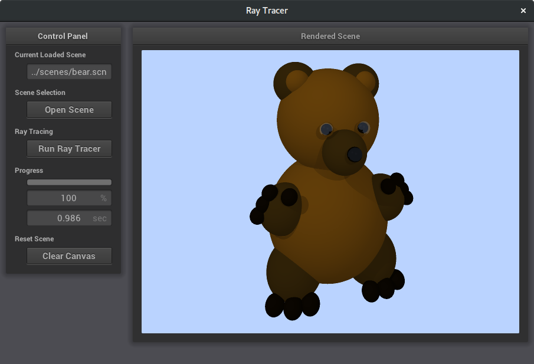
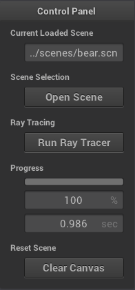
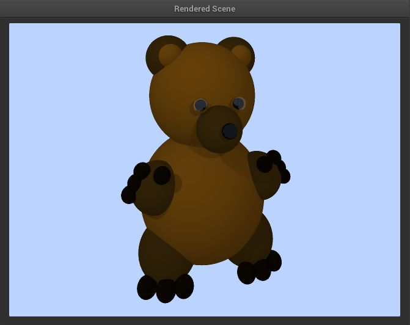
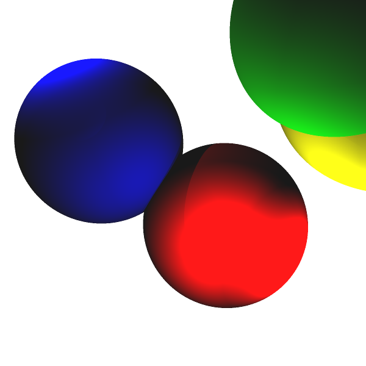
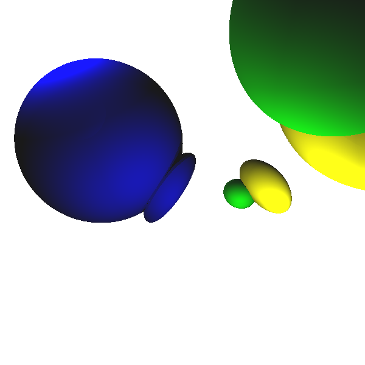
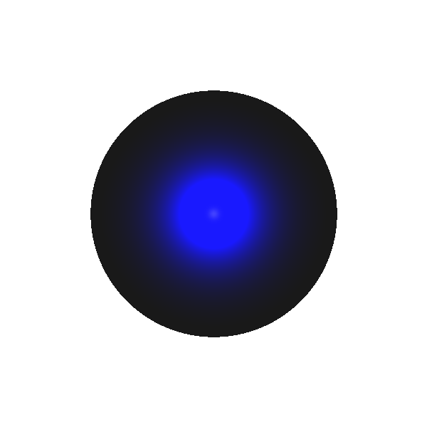
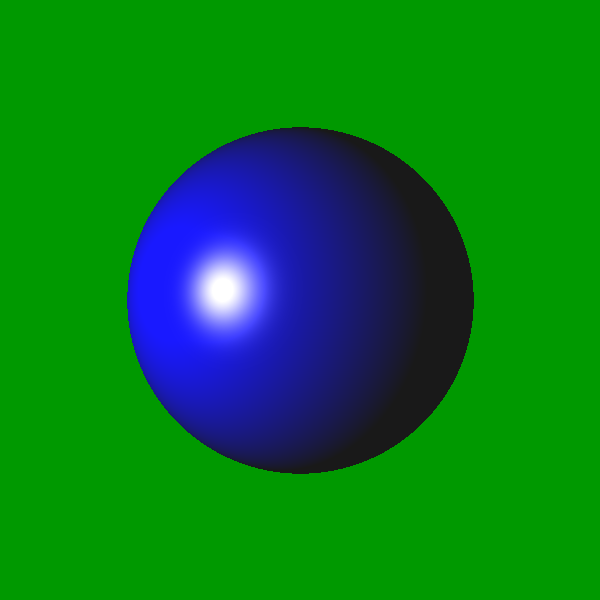
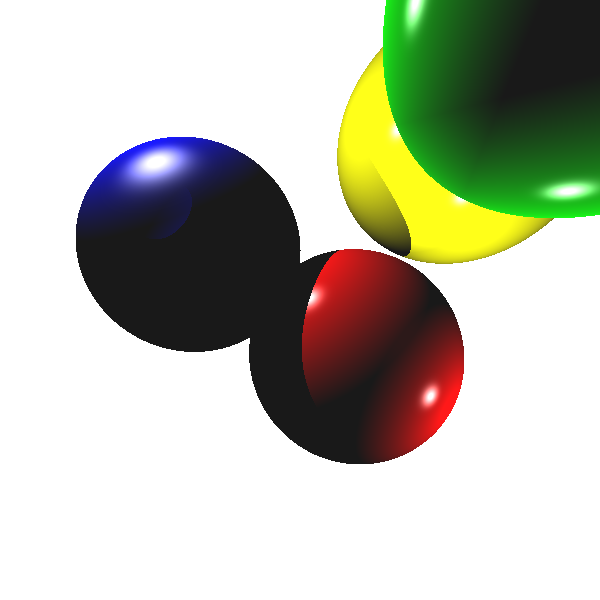

Ray Tracer
Description
This project is on using ray tracing to render various scenes. The user provides a scene detailing everything in it. This ray tracer works in 3 steps: Shoot a ray through each pixel, see if that ray intersects and spheres, and calculate the lighthing model for that pixel. I created a GUI to help users load scenes, and run the ray tracer. Currently there it is more of a ray caster, not a ray tracer, since there is no reflection or refraction.
Difficulties
The main two difficulties I had were in getting the shadows to work properly, and creating the GUI. The shadows for me were tricky because there was a lot of little details that you could screw up. For instance, I didnt realize that when solving for the intersection of a ray and a sphere, you need to check for negative t values that it calculates, even if you know the ray is already ahead of the sphere. The GUI was a challenge to link together the NanoGUI library and get OpenGL to properly load and render the texture. I also had to play around (i.e, fight) with nanogui a lot to get the buttons to synch and resizing events to work.
Code
Download zip file of codeInstallation / Usage
Please see the README.md file on the github repository HERE (or in the downloaded repository) for more info on how to install and usage.
Tools Used
- Nanogui library for the UI components
- stbi_image for reading and writing images
- OpenGL for showing the result image in a texture
Required Features (All implemented)
- Shading Model: Phong
- Objects: Spheres
- Materials: Ambient, diffuse, and specular properties
- Lighting: Ambient and Point
- Scene Creation: Camera placement, resolution, aspect ratio, object placement and properties
- Basic Sampling
Extra Features that I finished
- Graphical User Interface for loading scenes, rendering scenes, and viewing the resulting images
- BMP or PNG output
- Shadows
- Jittered supersampling
- Adaptive sampling
- Refraction (not 100% sure this is working)
- Reflection (not 100% sure this is working)
- Multiple light sources
- Directional lights
- Spot lights
Images:

The initial GUI screen

The final GUI screen after ray tracing

The GUI control box

The GUI image window. Scene: bear.scn
Basic sampling of diffuse spheres. Scene: spheres_no_spec.scn

Jittered super sampling of diffuse spheres
Adaptive super sampling of diffuse spheres

A perfectly reflective sphere (mostly white due to white background). Scene: scene2.scn

An example of the spotlight. Scene: spotlight.scn

Scene: an old cameraSceneTest.scn with no reflection/refraction
Artistic Submission: 
Scene: an old scene2.scn with no reflection/refraction